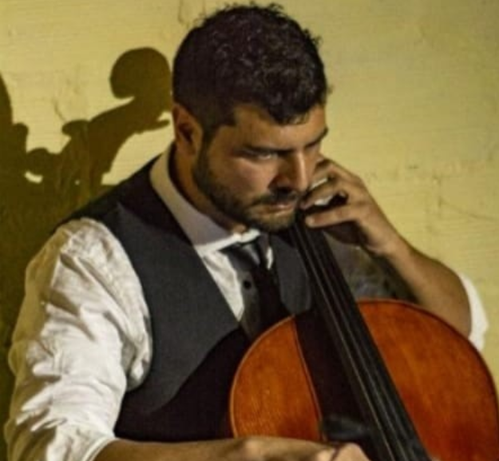

Próximos Shows
27 de agosto en "el tanque cultural". Nuevamente nos encontramos en el Tanque, entradas a la gorra en el local. Comida y buena música. Mucho Beatle y sorpresas. ¡Los esperamos!
-
Marcelo Lages
Guitarra y voz. Músico de vocación, Kinesiologo de profesión. Nacido y criado en Mataderos, el primero en llegar a los ensayos y en pedir la comida. La canción que más le gusta cantar: "Come Together"
-

Damián Lages
Batería y coros. El chelo o cello es su segundo instrumento musical favorito, siempre instrumentos que sean difícil de trasladar. Profe de educación física galardonado. Afirma que la banda es "más grande que los beatles". Tema Favorito: "Hey Jude"
-
Leandro Cordobez
Guitarra y coros. Es el motor de la banda, si fuera por él tocarían todos los días. Trabaja en una empresa donde mantiene en secreto su identidad de músico. Deja propinas sólo si pidió postre. Tema favorito: "Help!"
-
Hugo Basilotta
Bajo y coros. Proviene de un antiguo linaje de músicos. Tiene de hobby coleccionar instrumentos que dificilmente encajen con temas de los Beatles. Aporta el humor necesario para tocar 5 temas más. Tema favorito: "Strawberry Fields Forever"